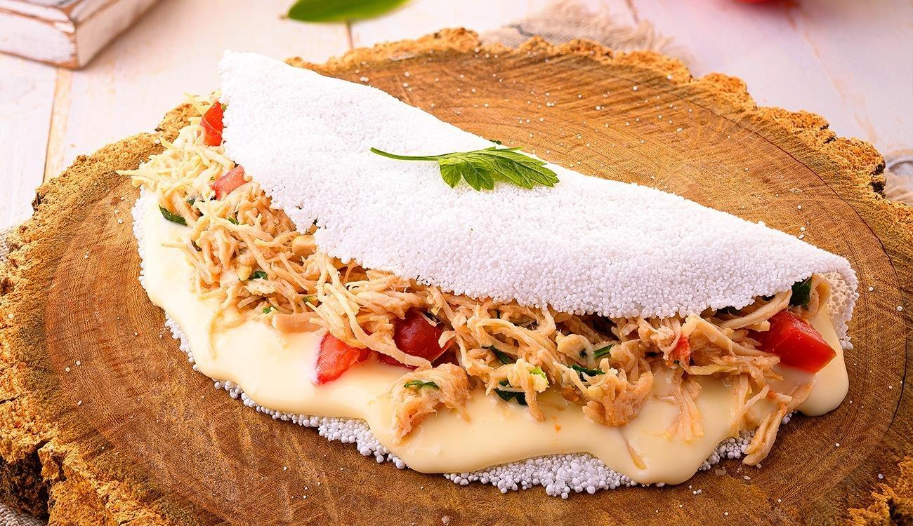

Tapioca

A tapioca, também chamada de goma, é uma substância extraída da mandioca e usada como massa ou base para o preparo de outros alimentos. De forma geral é consumida com recheio, seja ele doce ou salgado.
E para começar vamos ver a receita de tapioca mais simples do mundo de ser feita com este alimento de origem animal, o ovo. É um combinação que vem conquistando corações.
Ingredientes
- 3 colheres de sopa de tapioca hidratada;
- 2 ovos;
- Sal, pimenta e temperos a gosto;
- Manteiga.
Modo de preparo
- Peneire a sua tapioca direto na frigideira, formando uma camada e cobrindo todo seu fundo;
- Quebre seus dois ovos em cima da massa da tapioca e tempere com sal;
- Tampe a frigideira e abaixe o fogo;
- A intenção é que vá cozinhando pelas bordas até o meio;
- Transfira a tapioca para um prato e passe manteiga.